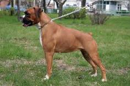

<table border="0" class="layout">
    <colgroup span="1"><col width="25%" span="1"></col><col width="75%" span="1"></col></colgroup> 
    <tbody>
        <tr>
            <td valign="top" width="25%">
                <div class="holster">
                    <div class="block_container s3 b-text b-static-text user_css_12816005438" id="e_12777975050">
                        <p><em><strong>Ивашкина Светлана</strong></em></p>
                        <p>тел.689-65-55</p>
                    </div>
                    <div class="block_container s3 b-image txt-center" id="e_1282730834287"><span></span></div>
                </div>
            </td>
            <td>
                <div class="holster">
                    <div class="block_container s3 b-text b-static-text user_css_12816005438" id="e_12827307108">
                        <p style="text-align: center;"><span style="color: #006600;"><span style="color: #0000ff;"><strong>Немецкий боксер</strong></span></span></p>
                        <p style="text-align: justify;"><span style="color: #006600;"><span style="color: #0000ff;"><strong>Из истории породы:</strong> наделённый, похоже, неисчерпаемым запасом энергии, боксёр - один из достойнейших представителей собачьего мира. Эти собаки приобрели широкую известность только после второй мировой войны, но сейчас они стали необыкновенно популярными сторожами и домашними любимцами. Основные предки боксёра - две немецкие мастифообразные собаки: булленбайцер ("быкодав") и беренбайцер ("медведедав"), которых использовали в средние века для травли быков и охоты на кабана и оленя. В 19 веке путём их скрещивания с другими породами, в основном с бульдогом, был получен боксёр. Несмотря на немецкое происхождение, название породы английское: оно удачно означает присущий этим собакам наступательный, жёсткий стиль боя. </span></span></p>
                        <p style="text-align: justify;"><span style="color: #006600;"><span style="color: #0000ff;"><strong>Общая характеристика:</strong> характер прямой, без фальши и хитрости. Боксёр всегда готов к работе и игре, однако, порой бывает необузданный. Он даже в старости сохраняет прекрасную форму. Это великолепный сторожевой пёс, известный своей отвагой и дисциплинированностью, одновременно бдительная, бесстрашная и выносливая собака. Он хорошо приспособлен к жизни в семье, очень привязчив, послушен и любит детей. </span></span></p>
                        <p style="text-align: justify;"><span style="color: #006600;"><span style="color: #0000ff;"><strong>Содержание и уход:</strong> боксёру для бодрости и хорошей физической формы требуются интенсивные нагрузки. Эта собака не требует особого ухода за шерстью, кроме ежедневной чистки щёткой.</span></span></p>
                        <p style="text-align: justify;"><span style="color: #006600;"><span style="color: #0000ff;"><strong>Размеры: </strong>рост 57-63 см (кобели), 53-59 см (суки). Вес 24-32 кг.</span></span></p>
                        <p style="text-align: justify;"><span style="color: #006600;"><span style="color: #0000ff;">____________________________________________</span></span></p>
                        <p style="text-align: justify;"><span style="color: #006600;"><span style="color: #0000ff;"><a href="http://www.dog.blister.ru/"></a></span></span></p>
                    </div>
                </div>
            </td>
        </tr>
    </tbody>
</table>​
